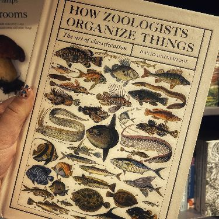
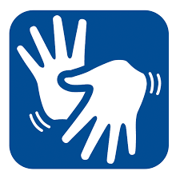

Nome completo:Julia Gomes SerraVida: Nasci no dia 10 de maio de 2008,
às 20h16 no hospital de Guarulhos-SP, cidade que morei até
meus 06 anos quando me mudei para Arealva-SP em 2014. Meus
pais decidiram vir para a cidade natal de minha mãe pois minha
avó estava, supostamente, nos seus últimos momentos, mas felizmente
ela se recuperou e viveu por mais alguns anos.
Descobri o CTI e decidi que queria estudar aqui quando estava
no oitavo ano, desde aquele momento até o final do nono eu
pensava em como iria ser se eu passasse e deixasse aquela vida
para trás. |
(Sou eu... sério.) |
Maternal:Concluído em EPG Ver. Svaa Evans Vereador, Guarulhos-SP.Ensino Fundamental I:Concluído em EMEF José Abílio Ferreira Prestes Prefeito, Arealva-SP.Ensino Fundamental II:Concluído em E.E Professor Sebaastião Inoc Assumpção, Arealva-SP.Ensino Médio:Cursando em Colégio Técnico Industrial CTI-Unesp, Bauru-SP. |
Faculdade:Instituto de Biociências da Universidade de São Paulo|USPPenso em fazer Bacharelado e licenciatura em zoologia na USP para poder trabalhar com o que gosto de fato, que são os animais. Até me formar quero poder trabalhar com a programação, pois é algo que gosto e sei que abre diversas portas para quem sabe aproveitar as oportunidades fornecidas. |
 |
Metas:
|
 |